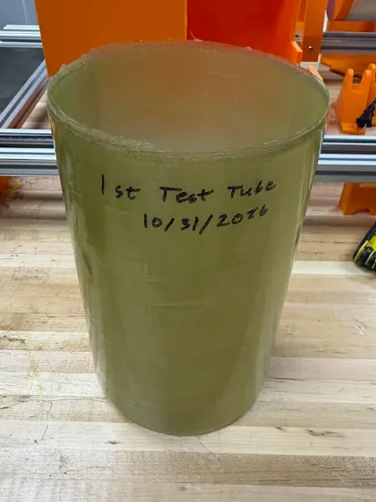
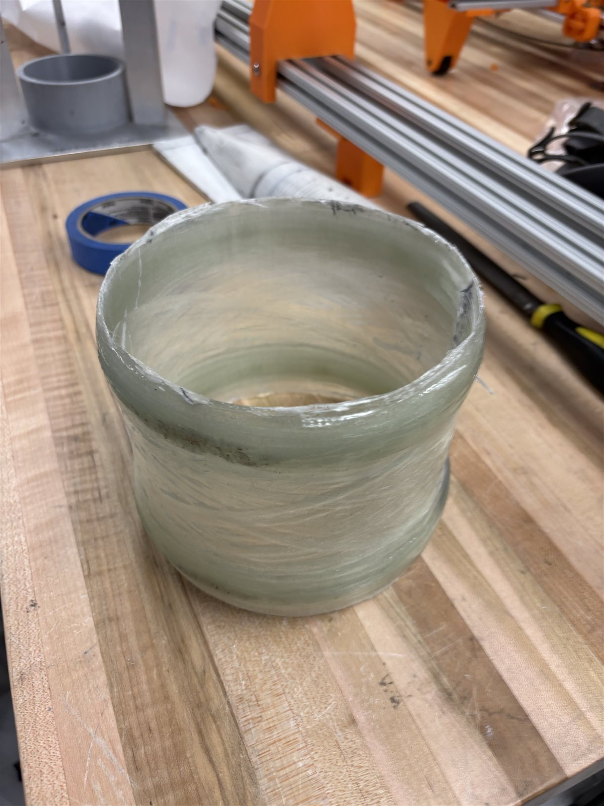
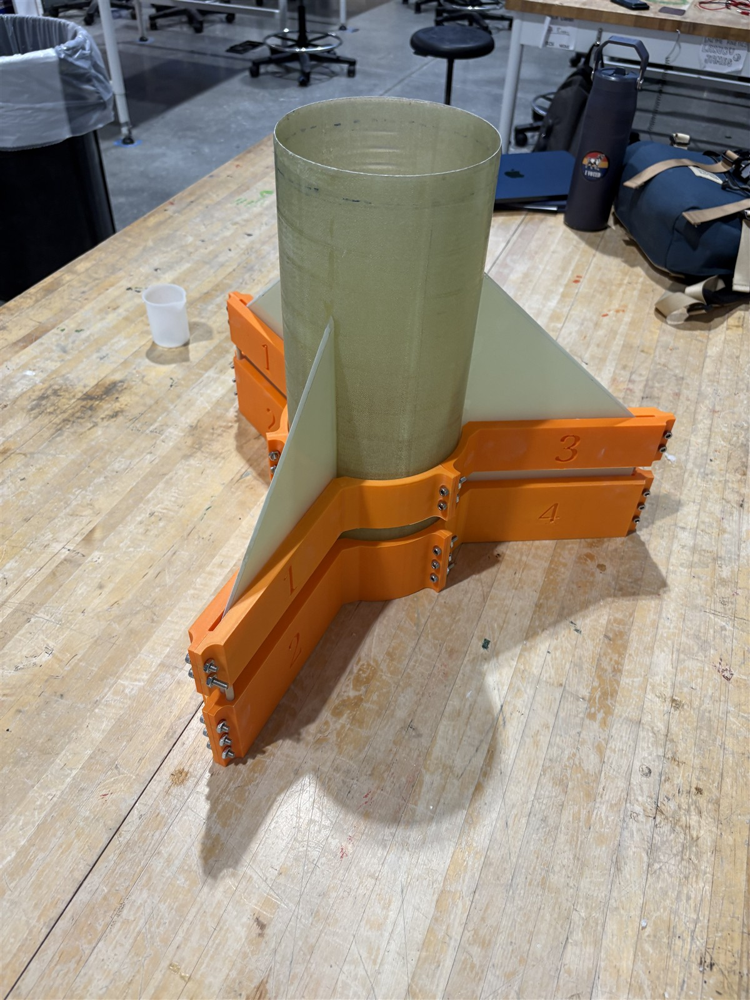

Duke Skywalker
30,000 ft SRAD Category: Target IREC 2027
My Role
As Structures Lead (July 2026–present), I lead structural design and manufacturing, including the airframe and fin can.
Design and fabrication practice in progress.
Duke Skywalker is Duke Aero's 30,000 ft SRAD rocket for IREC 2027, in design and fabrication practice. We're working on the filament winder for future flight tubes, with machine trials and troubleshooting still underway.
Fabrication


